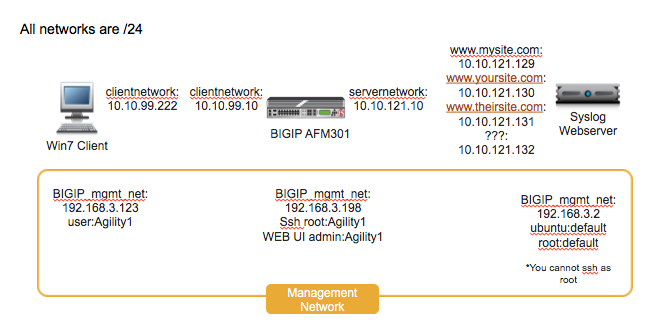

F5 Firewall Solutions > 2. Advanced Multi-Layer Firewall Protection > 2.1. Module 1: F5 Multi-layer Firewall Source | Edit on
2.1.1. Lab 1: Configure pools and internal virtual servers¶
A virtual server is used by BIG-IP to identify specific types of traffic. Other objects such as profiles, policies, pools and iRules are applied to the virtual server to add features and functionality. In the context of security, since BIG-IP is a default-deny device, a virtual server is necessary to accept specific types of traffic.
The pool is a logical group of hosts that is applied to and will receive traffic from a virtual server.
On your personal device
Look at the supplemental login instructions for:
- External Hostnames
- External IP addressing diagram
- Login IDs and Passwords are subject to change as well.

2.1.1.1. Create Application Pools¶
On BIG-IP
Create the following pools using the following tabel of pool information. Note that each pool has only one pool member, that is fine for the purposes of our lab:
Navigation: Local Traffic > Pools > Pool List, then click Create
| Name | Health Monitor | Members | Service Port |
|---|---|---|---|
| pool_www.mysite.com | tcp_half_open | 10.10.121.129 | 80 |
| pool_www.mysite.com-api | tcp_half_open | 10.10.121.132 | 80 |
| pool_www.theirsite.com | tcp_half_open | 10.10.121.131 | 80 |
| pool_www.yoursite.com | tcp_half_open | 10.10.121.130 | 80 |
{kind=link}
Note
Leave all other fields using the default values.
Navigation: Click Finished

Note
The pools should now show a green circle for status.
2.1.1.2. Create Internal Application Virtual Servers¶
By using the term ‘internal’ we are creating the virtual servers on what is essentially a loopback VLAN which prevents them from being exposed.
Create the following internal virtual servers using the following table of information:
Navigation: Local Traffic > Virtual Servers > Virtual Server List, then click Create. ( Change to “Advanced” configuration style )
| Name | Properties |
|---|---|
int_vip_www.mysite.com_1.1.1.1 |
Dest: Port: HTTP Profile: http Enabled on VLAN: SNAT: AUTO Default Pool: |
int_vip_www.mysite.com-api_1.1.1.2 |
Dest: Port: HTTP Profile: http Enabled on VLAN: SNAT: AUTO Default Pool: |
int_vip_www.mysite.com-downloads_1.1.1.3 |
Dest: Port: HTTP Profile: http Enabled on VLAN: SNAT: AUTO Default Pool: |
int_vip_www.theirsite.com_2.2.2.2 |
Dest: Port: HTTP Profile: http Enabled on VLAN: SNAT: AUTO Default Pool: |
int_vip_www.yoursite.com_3.3.3.3 |
Dest: Port: HTTP Profile: http Enabled on VLAN: SNAT: AUTO Default Pool: |


Note
Leave all other fields using the default values.
Navigation: Click Finished

Note
The virtual servers should now show a green circle for status.
2.1.1.3. Create An External Virtual Server To Host Multiple SSL Enabled Websites¶
Create the external virtual server using the following information.
Navigation: _Local Traffic > Virtual Servers > Virtual Server List_, then click Create
| Name | Dest | Port | HTTP Profile | SSL Profile (Client) | Default Pool |
|---|---|---|---|---|---|
| EXT_VIP_10.10.99.30 | 10.10.99.30 | 443 | http | www.mysite.com www.theirsite.com www.yoursite.com |
pool_www.mysite.com |


Note
The default pool is here simply to let the virtual server turn green. Policies will be used to switch traffic, not hard-coded pools. Note also the three different certificates applied to the Virtual Server. This is the basis of SNI.
Attention
Try accessing all the VS you created from the Windows host via ping and Chrome. There are bookmarks saved to access it. Ping works, but web browsing ( chrome or curl ) does not work because our policies are not set up yet.
Note
This completes Module 1 - Lab 1